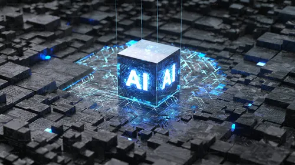

El futuro de la IA

Publicado el 30 de Abril
Publicado el 30 de AbrilLa inteligencia artificial está cambiando el mundo de la programación de formas increíbles... El futuro de la inteligencia artificial se define por una transición hacia la colaboración simbiótica y la automatización de agentes autónomos, donde la IA potencia la creatividad humana en lugar de simplemente reemplazarla. Para 2026, se espera que al menos el 80% de las empresas implementen IA generativa, mientras que la tecnología evoluciona hacia modelos más pequeños, eficientes y accesibles (low-code/no-code) que democratizan su uso. A nivel global, la IA no está “reemplazando la programación”, sino moviendo el centro de gravedad de cómo se crea software.
Antes, programar era principalmente ENZOOOOOOOOOOOOOO ESTUUUUUUUUUUUUUUUVOOOO ACAAAAAAAAAAAAAAAAAAAAAAAAAAAAAAAA: escribir cada línea manualmente memorizar sintaxis y patrones Ahora cada vez más se parece a: describir qué querés lograr revisar, ajustar y guiar lo que se genera 👉 El valor se desplaza de teclear código a tomar decisiones técnicas.
Históricamente la programación siempre subió niveles: binario → ensamblador ensamblador → lenguajes altos (Java, Python) frameworks → Spring, React ahora → IA que genera partes completas 👉 La IA es otro salto de abstracción: reduce lo “mecánico”.
Antes necesitabas: años de experiencia conocer frameworks, sintaxis, APIs Ahora: más personas pueden construir software funcional sin ser expertas en todo desde el inicio 👉 Eso amplía muchísimo la base de creadores de software.
Lo que empieza a valer más: diseño de sistemas pensamiento lógico y estructural saber preguntar bien (prompting) revisar y validar resultados entender negocio / problema real Y menos: recordar sintaxis exacta escribir boilerplate repetitivo
La consecuencia más fuerte: 👉 lo que antes tomaba semanas ahora puede tomar horas Esto cambia industrias enteras: startups más rápidas prototipos instantáneos más experimentación más software creado en general
No es solo positivo: código generado sin entenderse (deuda técnica) dependencia excesiva de IA errores “correctos pero peligrosos” saturación de software mediocre 👉 Por eso el criterio humano sigue siendo clave.
La tendencia global no es “IA reemplaza programadores”, sino: 👉 programadores + IA = nueva forma de construir software Como pasó antes con: compiladores frameworks cloud
En conclusión, la inteligencia artificial no está reemplazando la programación, sino evolucionando la forma en que se construye software. El cambio principal es que el trabajo deja de centrarse en escribir cada línea de código y pasa a enfocarse en pensar soluciones, diseñar sistemas y tomar decisiones técnicas, mientras la IA acelera y automatiza gran parte de lo repetitivo. En ese sentido, la programación no desaparece, sino que se vuelve más abstracta, más rápida y más accesible, pero también exige más criterio para validar lo que se genera.